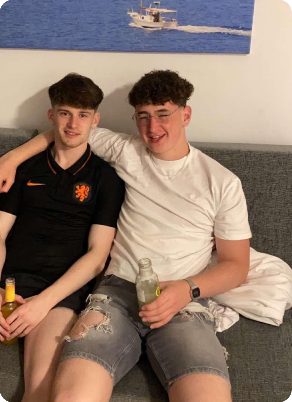

<div class="container bg-body-primary">
    <div class="row">
        <div class="text-white px-2 col mw-70 mt-5">
            <h4 class="me-5 lh-base">
                <span class="opacity-50">As a </span>full-stack developer <span class="opacity-50">with over 2 years of experience, I've had the privilege of exploring various realms of the development universe, from front-end to back-end, product design, and project management. Always adapting to my surroundings!</span>
                <br>
                <br>
                <span class="opacity-50">With a deep understanding of full-stack development, I'm comfortable diving into the front-end world, crafting immersive user experiences, as I am delving into the back-end realm, architecting robust and scalable solutions to tackle any problem. I thrive on the challenge of finding solutions that drive business success.</span>
                <br>
                <br>
                <span class="opacity-50">As much as I love my technical prowess, I'm also a </span>team player <span class="opacity-50">with killer</span> communication skills<span class="opacity-50">. I thrive in </span>collaborative environments<span class="opacity-50">, where I can bring my unique perspective and work seamlessly with teams to make some magic happen.</span>
            </h4>
        </div>
        <div class="col mt-5">
            
        </div>
    </div>
</div>
